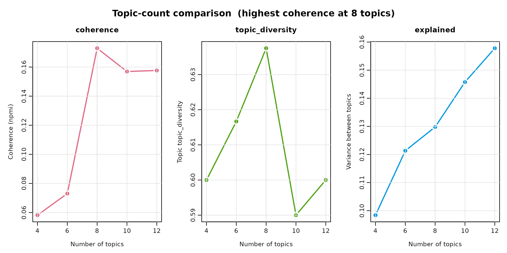
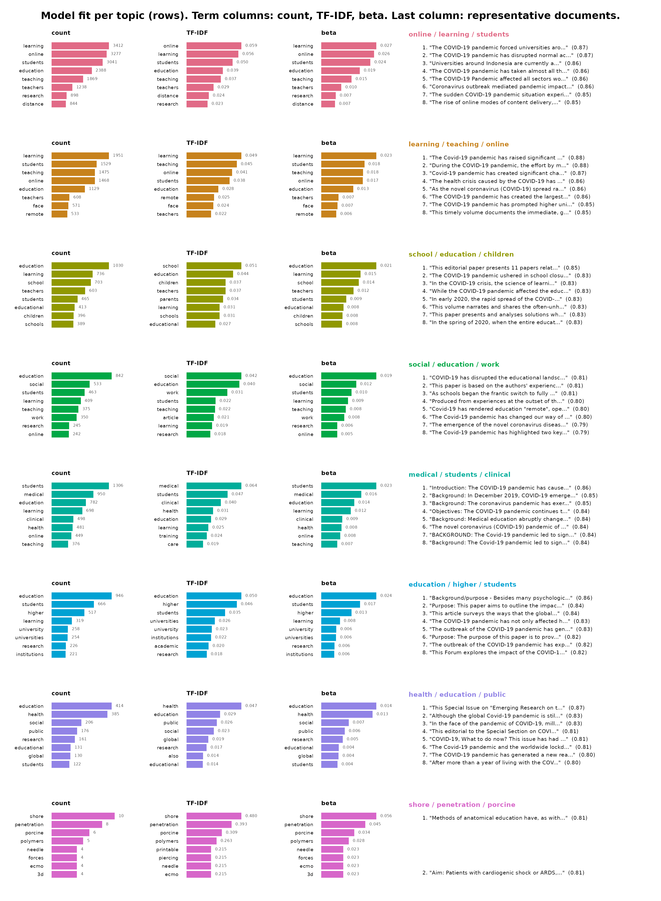
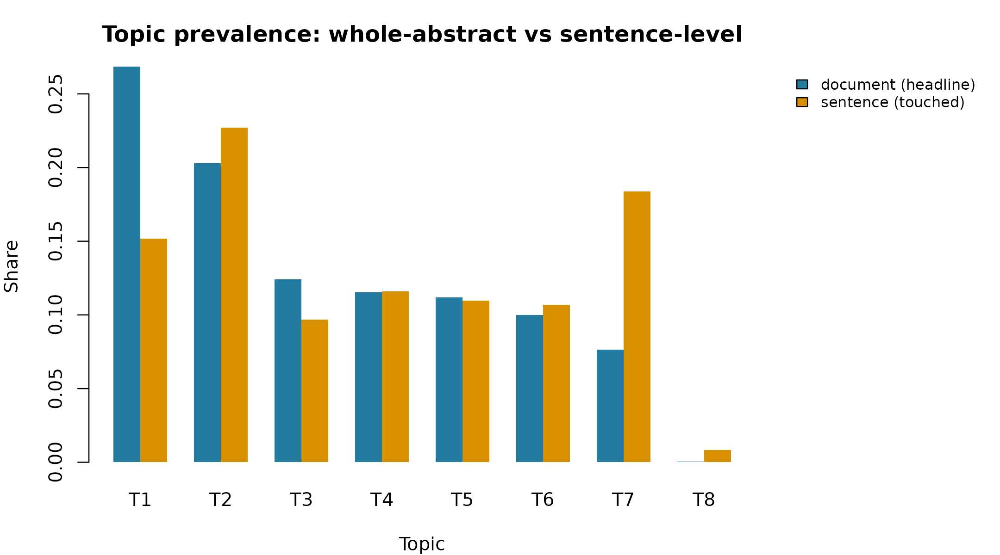
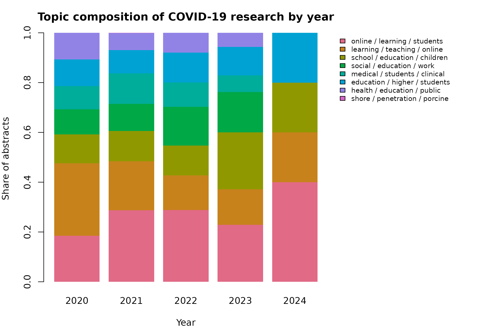

Topic Modeling COVID-19 Research Abstracts
A semantic review of the pandemic education literature, 2020-2024
2026-08-22
Source:vignettes/articles/covid_topics.Rmd
covid_topics.RmdThe bundled covid dataset holds abstracts of COVID-19
research on education, children, schools, and society. This review
embeds every abstract with a Sentence-BERT model, groups them into
semantic topics, and reads the result — including how the mix of topics
shifted across the pandemic years. Everything is deterministic:
rerunning reproduces every number and figure.
Building the model
Drop the records indexed without an abstract, then clean the source
text before encoding. clean_corpus() repairs junk
characters, strips any list and reference numbering, and — with
min_content — drops whole low-content rows such as citation
lists. It carries the other columns along, so Year stays
aligned. Sentence-BERT tolerates a little noise, so the goal is fixing
broken text and removing non-content rows, not scrubbing every token. On
a few messy examples the effect is easiest to see:
| Before | After |
|---|---|
| 1. The programme raised attainment in 2020, see section 3.2.1. | The programme raised attainment in 2020, see section. |
| (3) OJ No L 297, 24.11.1979, p. 1. | OJ No L 297. |
| Peer support improved outcomes [12] across schools. | Peer support improved outcomes across schools. |
| Full report at https://example.org/study.pdf and doi:10.1/x. | Full report at and |
The citation-only row above scores far below the prose rows on
alphabetic density, so min_content = 0.5 drops it entirely
rather than embedding it. The generic cleaners deliberately stop short
of domain-specific reference forms; for those, remove takes
custom patterns —
clean_corpus(text, remove = "OJ No L?\\s*\\d+") strips
European Union Official Journal identifiers, for example. The same clean
text then feeds the encoder, the topic terms, and the representative
abstracts.
covid_content <- covid[covid$Abstract != "[No abstract available]", ]
covid_content <- clean_corpus(covid_content, column = "Abstract", min_content = 0.5)encode() turns each abstract into a 384-dimensional
vector with the pinned default model, all-MiniLM-L6-v2.
Abstracts longer than the model’s 256-token window are truncated to
their opening; for full-length documents a long-context model such as
nomic-embed-text-v1.5 (8,192 tokens) is a drop-in
replacement.
install_runtime()
model_download()
embeddings <- encode(covid_content$Abstract, batch_size = 32)Every abstract shares a scientific boilerplate — covid,
pandemic, study, results — and the label of
every topic would otherwise repeat it. Those words carry no
signal about what separates one topic from another, so they are excluded
up front; numbers = "remove" drops bare years and counts
(2020, 19) for the same reason. Domain stop words are
the standard way to keep topic labels informative.
covid_stops <- stop_words(add = c(
"covid", "coronavirus", "sars", "cov", "pandemic", "disease",
"study", "studies", "result", "results", "conclusion", "conclusions",
"background", "method", "methods", "objective", "aim"
))There is no correct topic count. select_topics() fits
one model per candidate and reports the numbers that justify a
choice:
sweep <- select_topics(
covid_content$Abstract,
n_topics = c(4, 6, 8, 10, 12),
embeddings = embeddings,
measure = "npmi",
stop_words = covid_stops,
numbers = "remove"
)
sweep
#> <sbert_topic_sweep> 5 candidates, coherence measure: npmi
#> n_topics coherence topic_diversity explained
#> 4 0.05818542 0.6000000 0.0984003
#> 6 0.07303481 0.6166667 0.1213267
#> 8 0.17293698 0.6375000 0.1297750
#> 10 0.15692884 0.5900000 0.1457480
#> 12 0.15765139 0.6000000 0.1577964
#>
#> Fitted models retained: fitted(x, n_topics = 8)
plot(sweep)
Read the count from the table rather than by habit: coherence rises,
peaks, and falls as topics multiply, while explained keeps
climbing regardless. The count with the highest coherence is the
granularity this corpus best supports — the point after which splitting
topics stops buying coherence — so the model is fitted there.
Corpus at a glance
Read the topics as a lens, not a taxonomy. The count was chosen because coherence peaks there, not because it is uniquely correct. Labels are the three most distinctive class-based TF-IDF terms — with corpus boilerplate and bare numbers excluded — not validated names. A bibliographic export is never perfectly on-theme, so one small cluster collects genuinely off-topic papers (veterinary and materials research) — the model isolating them rather than contaminating the education topics.
The topics
| Topic | Distinctive terms | Abstracts | Share |
|---|---|---|---|
| 1 | online / learning / students | 1033 | 26.9% |
| 2 | learning / teaching / online | 781 | 20.3% |
| 3 | school / education / children | 477 | 12.4% |
| 4 | social / education / work | 444 | 11.5% |
| 5 | medical / students / clinical | 431 | 11.2% |
| 6 | education / higher / students | 385 | 10.0% |
| 7 | health / education / public | 294 | 7.6% |
| 8 | shore / penetration / porcine | 2 | 0.1% |
plot(type = "fit") lays out every topic at once — the
three keyword views (raw within-topic count, class-based TF-IDF, and
generative probability) beside each topic’s representative abstracts,
one row per topic:
plot(topic_model, type = "fit", n_terms = 8, n_representatives = 8)
The cards below give the same evidence topic by topic, with the full abstracts in collapsible panels — the auditable proof that a label means what it claims.
Topic 1 — online / learning / students
Nearest abstract 1 - 2022 (distance 0.233)
The COVID-19 pandemic has disrupted existing educational systems worldwide. Due to lockdowns in several countries, the educational institutions have been directed by governments to move towards online learning. The challenge for educational institutions and faculty members is to assess the influence of various factors that would enable adoption of online learning by students in higher education. This study investigates the influence of awareness of COVID-19 (AOC19), computer & internet self-efficacy (CISE), and online communication self-efficacy (OCSE) on perceived net benefits (NB) of the students and their intention towards the online learning (INT). The study further analyzes the mediati…
Nearest abstract 2 - 2021 (distance 0.254)
Covid-19 has forced educators to switch to online teaching as the only viable option, whether through video lecturing or using other online teaching tools. Therefore, the study investigates university teachers’ perceptions towards their continuing intention of using the online platforms after Covid19 situations. To answer such questions, the present study conducted a survey of 242 faculties engaged in higher education teaching at assistant. We have conducted the present study using a sample of 242 faculties. Based on the framework of technology adoption model (TAM), this study investigates the research questions in the context of India. The study has adopted a mixed-method research design c…
Nearest abstract 3 - 2022 (distance 0.265)
This study examines the current state of acceptance of online classes using the technology acceptance model. The background of the study is the turning point in Korean education in response to the COVID-19 pandemic and speculation about changes in the post-COVID educational environment. To measure the acceptance rate of online classes, a survey was conducted on a total of 313 university students taking online classes. The data were analyzed using structural equation modeling. The results of the study are as follows: First, the perceived ease of use of online classes showed a positive effect on perceived usefulness. Second, both the perceived ease of use and usefulness of online classes show…
Topic 2 — learning / teaching / online
Nearest abstract 1 - 2020 (distance 0.353)
General chemistry, CHE 101, at Hampton University is an undergraduate course designed to meet curriculum requirements for nonscience majors. The four-credit course consists of a lecture and a laboratory, taken concurrently. The lecture consists of three 50 minute or two 75 minute sessions, and the laboratory consists of one 3 hour session every week. The first 8 weeks of the 2020 spring semester were taught face-To-face (F2F), but this changed to remote teaching and learning for the remainder of the semester because of COVID-19. The university canceled F2F teaching in mid-March, and the students went home with the instructions that remote teaching would commence the following week. In the m…
Nearest abstract 2 - 2020 (distance 0.326)
The transition to a remote teaching and learning environment was quick and painful at times, and yet it was a learning experience for everyone. The chemists at Centre College utilized new (to them) technology to reimagine the typical face to face interactions with students and colleagues. From Slack to Pear Deck to Zoom classrooms, the faculty and students engaged with a variety of platforms to continue to learn remotely despite the challenges of the global pandemic. The faculty learned the value of utilizing different types of technology, and the students learned some important skills and content. © 2020 American Chemical Society and Division of Chemical Education, Inc.
Nearest abstract 3 - 2020 (distance 0.366)
Today’s engineering laboratory education often lacks opportunities for students to practice critical thinking through real-world problems. This particular objective is even harder to achieve through online laboratory experiments. In this article, we summarize our innovation in using a real-world challenge, analyze big data, to empower student data analysis skills in remote teaching platform. This approach allows students to collect data, analyze, and evaluate possible solutions continuously through hands-on experimentation with accessible resources around them. Compared to the video-recorded lab, our method achieves a higher level of learning in Bloom’s taxonomy. To further improve our appr…
Topic 3 — school / education / children
Nearest abstract 1 - 2021 (distance 0.345)
This study reports the results of a survey conducted with a set of “hybrid homeschool”leaders (principals or directors) from around the United States who were asked to describe how their families categorize themselves (as homeschoolers, or as members of private schools), the ways in which their schools operate in terms of scheduling, hiring, etc., how their schools are regulated in the various states, and how they work within those regulatory frameworks, and how they were affected by COVID-19, both in the spring of 2020 and the fall of 2020. Respondents provided a variety of names to describe their schools and a split in how families see themselves. In terms of staffing, schedules, tuition,…
Nearest abstract 2 - 2020 (distance 0.262)
Parents of children with special educational needs and disabilities (SEND) took part in an online survey that explored their experiences of home-schooling during the coronavirus pandemic. Two hundred and thirty-eight parents from the UK responded to 49 questions about the resources and support they had received, their management and feelings surrounding home-schooling. Chi-square analyses were used to establish whether parents’ experiences differed as a result of socio-economic status (SES) or the nature of their child’s SEND. Results indicated that parents were dissatisfied with the resources and support they had received for their child’s educational and psychological needs. Parents felt …
Nearest abstract 3 - 2021 (distance 0.412)
The aim of the present study is to describe how parents and primary school children dealt with the rapid and significant changes to their schooling experience during COVID-19 and how this correlated with children’s mental health. A cross-sectional study comprising an online survey was completed by 797 parents of children from 4 - 12 years, (M = 9 years). School variables explored included school expectations for schoolwork, how much time per day spent on schoolwork, how able parents were to support their child with schoolwork, whether a child had support from an adult at school and whether the child had support from a friend. Child mental health was measured by the Strengths and Difficultie…
Topic 4 — social / education / work
Nearest abstract 1 - 2021 (distance 0.369)
It took a global pandemic for me to recognize how my social work teaching was an act of feminist praxis. I have long identified as a feminist and regularly engage efforts to advance equity for women, primarily centered on the abolition of prisons which disproportionately incarcerate Indigenous and Black women in Canada. Surprisingly, I have never considered how my feminism shows up in my teaching. The following reflexive essay explores the ways in which the feminist principles of centring emotions, rejecting patriarchal hierarchy, and challenging white feminism were embedded into the development and delivery of a graduate level social work research course that was rapidly adapted to being t…
Nearest abstract 2 - 2021 (distance 0.390)
This article frames three individual perspectives on the experience of unsettling disciplinary and institutional subjectivities through teaching and learning practices in Creative Writing and Literary Studies. At the centre of this experience is a common engagement of teaching and learning with sovereign knowledges. More specifically, the accounts in the article are drawn from experiences in 2020, when the forces of extra-academic life - especially lockdown during COVID-19 in Victoria - intensified the objectives and the means of challenging the boundaries of settler colonial expertise. The authors find that collaborative and iterative sharing of teaching experiences and methods not only su…
Nearest abstract 3 - 2021 (distance 0.456)
In this chapter, I trace instances of meaning-making through fragments of two interviews. Using restorying and the construction of parallel stories to interpret resonances across the participants’ stories and my own stories of experience, I draw strong personal connections with elements of each semi-structured interview. In a revisitation of the narrative threads of identity, community, and change, the image of Black women as literacy educators who co-construct meaning in and out of the classroom is rendered. © 2021 by Emerald Publishing Limited.
Topic 5 — medical / students / clinical
Nearest abstract 1 - 2021 (distance 0.309)
Objective: Describe the early impact of the COVID-19 pandemic on general surgery residency training nationwide. Design: A 31-question electronic survey was distributed to general surgery program directors. Qualitative data underwent iterative coding analysis. Quantitative data were evaluated with summary statistics and bivariate analyses. Participants: Eighty-four residency programs (33.6% response rate) with representation across US geographic regions, program affiliations, and sizes. Results: Widespread changes were observed in the surgical training environment. One hundred percent of programs reduced the number of residents on rounds and 95.2% reduced the size of their in-hospital reside…
Nearest abstract 2 - 2021 (distance 0.375)
Objective: The COVID-19 pandemic has drastically transformed the healthcare community and medical education across the United States. The aim of this study was to evaluate the impact of COVID-19 on the surgical resident training experience, assess possible sources of stress or anxiety among surgery residents, and examine how patterns of anxiety vary by resident rank. Design: We developed and disseminated a survey, which included the Generalized Anxiety Disorder 7-Item Scale (GAD-7), to all general and integrated plastic surgery residents in their clinical years of training at the University of California, San Francisco. Statistical analysis of the survey responses was performed using the Kr…
Nearest abstract 3 - 2021 (distance 0.215)
Problem Value-added medical education (VAME) has been difficult to implement due to student and educator constraints. The COVID-19 pandemic caused mass transitions to online learning, removed students from clinical settings, and underscored students’ desires for meaningful VAME opportunities. The authors introduced the Stanford Frontline COVID-19 Consult Service (SFCS), through which off-service medical and physician assistant (PA) students provided assistance to clinicians in the form of rapid research regarding COVID-19 clinical questions. Approach The SFCS, a student-derived VAME initiative, was implemented from March to May 2020 by Stanford University medical students, PA students, and …
Topic 6 — education / higher / students
Nearest abstract 1 - 2021 (distance 0.380)
The market shock that accompanied COVID-19 has the potential to significantly transform higher education. At the same time, it presents an opportunity for higher education to learn from industry and adopt successful policies and practices. This paper provides lessons learned from the oil industry which may help higher education institutions to successfully navigate disruption and improve organizational outcomes. A four-phase business cycle model is presented as a strategic corollary for industry and higher education to support decision-making and provide a mechanism for discussion and policy development. © The Author(s) 2020.
Nearest abstract 2 - 2022 (distance 0.210)
Worldwide, COVID-19 affected higher education, including finance, and international mobility. But some systems have been more affected than others; notably Anglophone systems that have been a preferred destination for a high proportion of international students. Australia presents a particularly interesting case. Particularly vulnerable to any significant downturn in international enrolments, given its high proportion of international students, and heavy dependence on their fees, the problem was exacerbated by growing US - China tensions, and resultant pressures on Australia and its universities. Culture Wars were also evident in the steadfast refusal of the national government to offer muc…
Nearest abstract 3 - 2020 (distance 0.247)
COVID-19 has had a major impact on international higher education with border closures, cancelled flights, and a shift to online teaching and learning. As a result, many international students have decided to either abandon or defer their plans to study abroad. If students stay in their home countries, many institutions that rely heavily on foreign students’ fees will suffer, with potential impacts on national economies. Beyond the economic implications, it is also important to consider the personal impact of COVID-19 on international students, who may face delays or obstacles to program completion, employment and/or immigration. Though there are certainly risks and losses in the short term…
Topic 7 — health / education / public
Nearest abstract 1 - 2021 (distance 0.328)
Severe Acute Respiratory Syndrome Coronavirus 2 (SARS-CoV-2) or COVID-19 has undeniably changed the world forever. Capitalism in the United States and Europe can no longer feel immune from the effects of epidemics that were at one point in time the concern of minor countries, such as the recent (2014-2016) Ebola epidemic in Western Africa. This article examines how COVID-19 not only showed that Capitalism has no clothes in its inability to respond effectively to this momentous event, but shows the burgeoning of the impact on its slow-motion decline. This is evident from the still-unresolved healthcare crisis in the United States, which allows runaway contagion, sickness, and death due to a …
Nearest abstract 2 - 2021 (distance 0.189)
This editorial to the Special Section on COVID-19 emphasises the importance of researching pandemic realities and the value that the findings can bring to the way we shape decisions in the future, for the ‘new normal’. The pandemic, with its rapidly changing timeline, required swift action in untrialled circumstances and its consequences have been experienced differently by diverse institutions and across national contexts. Depending on the roles and responsibilities we may have taken on during this time, our capabilities to document our experiences and emerging trends have varied. © University of Deusto.
Nearest abstract 3 - 2021 (distance 0.298)
Humanity has been on its way accompanied by epidemics, as man has evolved, he has faced different problems that have affected most of society. In the last 50 years, more viruses have appeared that have affected different regions and multiple countries; but one of the most distributed worldwide is COVID-19. The objective is to offer some information related to this pandemic and its evolution in different countries. The bibliographic review method was used even though some bibliographies are very recent, but it has allowed us to know their behavior and follow-up. The results of the countries most affected by this pandemic are shown, where it could be said that Italy has increasingly affected …
Topic 8 — shore / penetration / porcine
Nearest abstract 1 - 2021 (distance 0.187)
Aim: Patients with cardiogenic shock or ARDS, for example, in COVID-19/SARS-CoV-2, may require extracorporeal membrane oxygenation (ECMO). An ECLS/ECMO model simulating challenging vascular anatomy is desirable for cannula insertion training purposes. We assessed the ability of various 3D-printable materials to mimic the penetration properties of human tissue by using porcine aortae. Methods: A test bench for needle penetration and piercing in sampled porcine aorta and preselected 3D-printable polymers was assembled. The 3D-printable materials had Shore A hardness of 10, 20, and 17G Vygon 1.0 × 1.4 mm × 70 mm needles were used for penetration tests. Results: For the porcine tissue and Shore…
Nearest abstract 2 - 2021 (distance 0.187)
Methods of anatomical education have, as with many facets of normal life, been forced to evolve rapidly due to the Covid-19 pandemic. Whilst some authors claim that cadaver dissection is now under threat, we believe the centuries-old practice can and must be upheld. © 2020 The Author(s). Published by Informa UK Limited, trading as Taylor & Francis Group.
What each paper touches
The document model gives each abstract a single label — its dominant
theme. A long abstract usually spans several topics, though, and unlike
the whole-abstract embedding, its individual sentences are short enough
to escape the 256-token truncation. segment() splits a
document into sentences, deterministically — and max_tokens
guards against the rare sentence that is itself over the window,
re-splitting it at punctuation first. The cap counts words here, a
deterministic offline proxy; 200 words sits comfortably under the
256-token limit (pass model = to count that model’s exact
tokens instead):
segments <- segment(covid_content$Abstract, level = "sentence", max_tokens = 200)
head(segments, 3)
#> document_id document_name segment
#> 1 1 1
#> 2 1 2
#> 3 1 3
#> text
#> 1 The COVID-19 Pandemic and resulting school closures, present a serious threat to young children's care, learning, and the achievement of their developmental potential (UNESCO, 2020a).
#> 2 Disruptions to normal school functioning worldwide have presented challenges for teachers who were generally unprepared to teach using different methodologies (United Nations in Policy brief: Education during Covid-19 and beyond, 2020).
#> 3 Since a child's right to care and education extends even during emergencies this study was conceptualized to better understand the professional experiences of early childhood teachers as they navigated the teaching learning process during the COVID-19 school disruption.topic_gamma() takes that segmentation directly —
assigning every sentence to its nearest topic and returning each
abstract’s topic mixture (gamma sums to 1 within a
document). Passing the segment() frame keeps the cap and
lets a single encode be reused rather than segmenting again inside the
call:
gamma <- topic_gamma(topic_model, segments)
head(gamma)
#> document_id topic gamma n_segments
#> 1 1 1 0.0 10
#> 2 1 2 0.0 10
#> 3 1 3 0.7 10
#> 4 1 4 0.2 10
#> 5 1 5 0.0 10
#> 6 1 6 0.0 10Most abstracts touch several topics. One that spreads across the most, with the share of its sentences on each:
| Topic | Share of sentences |
|---|---|
| learning / teaching / online | 22% |
| social / education / work | 22% |
| online / learning / students | 11% |
| school / education / children | 11% |
| medical / students / clinical | 11% |
| education / higher / students | 11% |
| health / education / public | 11% |
Aggregating every sentence gives a second view of prevalence — the share of sentences on each topic — next to the document-level share. The two agree on the big themes but diverge on the secondary ones: a topic that is rarely a paper’s headline can still run through many papers’ sentences.

A topic model of whole abstracts reports each paper’s headline; the sentence view shows everything it touches — and because sentences are never truncated, it reaches content the 256-token window cuts off.
Topics across the pandemic
Because every abstract carries a publication year, the model doubles as a lens on how the research conversation moved. The share of each year’s abstracts assigned to each topic:

Each bar is one year; the coloured segments are the topics’ shares that year. Reading left to right shows which strands of the education literature grew and which faded as the pandemic wore on.
Reusing the model. predict() assigns
new abstracts to these topics without refitting, and
topic_membership() gives graded probabilities when an
abstract sits between topics. For long abstracts, segment()
splits each into sentences and blend() carries the paper’s
context into every sentence’s embedding, so a sentence that is ambiguous
alone still embeds near its subject.